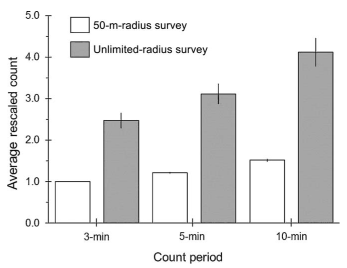

Chapter 2 Introduction
All assumptions are violated, but some are more than others
2.1 Apples and oranges
“A comparison of apples and oranges occurs when two items or groups of items are compared that cannot be practically compared.” [Wikipedia]
How we measure things can have big impact on our results.
- You might say: I saw 5 robins (walking down the road),
- I might say: I only saw one (sitting on my porch)
2.2 Apples to apples
Effort:
- area of the physical space searched,
- amount of time spent,
- number of individuals identified.
Experience, skill, “sensitivity”:
- number of years in field work,
- eye sight, hearing ability,
- mic sensitivity.
The goal is to make our measurements comparable.
2.3 Effects can be significant

10-min unlimited count ~300% increase over 3-min 50-m count. Average across 54 species of boreal songbirds.
2.4 So what is a point count?
- A trained observer
- records all the birds
- seen and heard
- from a point count station
- for a set period of time
- within a defined distance radius.
2.5 Questions we want to answer using point counts
- How many? (Abundance, density, population size)
- Is this location part of the range? (0/1)
- How is abundance changing in space? (Distribution)
- How is abundance changing in time? (Trend)
- What is the effect of a treatment on abundance?
2.6 Standardization by design
Have a set of standards/recommendations that people will follow to
- maximize efficiency in the numbers of birds and species counted,
- minimize extraneous variability in the counts.
But programs started to deviate from standards:
“For example, only 3% of 196,000 point counts conducted during the period 1992–2011 across Alaska and Canada followed the standards recommended for the count period and count radius.”
2.7 Protocols do vary

Survey methodology variation (colors) among contributed projects in the Boreal Avian Modelling (BAM) data base as of 2014.
2.8 Pop quiz
- In what regard can protocols differ?
- What drives protocol variation among projects?
- Why have we abandoned following protocols?
2.9 Moving away from standards
- Detection probabilities might vary even with fixed effort (we’ll cover this more later),
- programs might have their own goals and constraints (access, training, etc).
2.10 Model based approaches
Less labour intensive methods for unmarked populations has come to the forefront:
- double observer (Nichols et al. 2000),
- distance sampling (Buckland et al. 2001),
- removal sampling (Farnsworth et al. 2002),
- multiple visit occupancy (MacKenzie et al. 2002),
- multiple visit abundance (Royle 2004).
2.11 Models come with assumptions
- Population is closed during multiple visits,
- observers are independent,
- all individuals emit cues with identical rates,
- spatial distribution of individuals is uniform,
- etc. (we will investigate this further in depth).
2.12 Assumptions are everywhere
Although assumptions are everywhere, we are really good at ignoring them:
- Relativistic time dilation is negligible (as long as we are not on a space station),
- samples are independent.
2.13 Pop quiz
- Can you mention some other common assumptions?
- Can you explain why we neglect/violate assumptions?
2.14 The hard truth
Assumptions are violated in many ways, because we seek simplicity.
The main question we have to ask: does it matter in practice?
2.15 Our approach
- We will introduce a concept,
- understand how we can infer it from data,
- then we recreate the situation in silico,
- and see how the outcome changes as we make different assumptions.
It is guaranteed that we violate every assumption we make.
To get away with it, we need to understand how much is too much.
“All assumptions are violated, but some are more than others.”